Samuel "H" and Eugenia Elmira Taylor Roundy Family
Home
Histories
Charts
Photos
Maps
Restricted
News
Info
Contact
| <--(return)-- |   | Shadrach Roundy and Betsy Quimby | ----> |   ----> ----> | Lorenzo Wesley and Prisella Parrish  |
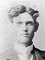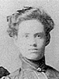 | Samuel "H" Roundy and Eugenia Elmira Taylor |
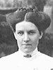 | Florence May Roundy 24 May 1887 - 28 Aug. 1925 Married David Adams Allen 27 July 1905 The 1st child of Samuel "H" Roundy and Eugenia Elmira Taylor |
| 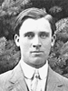 | William Lorenzo Roundy 15 Nov. 1884 - 16 July 1976 Married Jennie James 19 May 1909 The 2nd child of Samuel "H" Roundy and Eugenia Elmira Taylor |
| 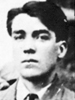 | Samuel Edmund Roundy 8 Sep. 1889 - 17 Oct. 1918 Married Cassie Fuller 26 Aug. 1908 The 3rd child of Samuel "H" Roundy and Eugenia Elmira Taylor |
| 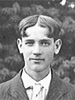 | Louis Leslie Roundy 8 Feb. 1891 - 24 Oct 1919 Married Christine Steedman 7 June 1916 The 4th child of Samuel "H" Roundy and Eugenia Elmira Taylor |
| 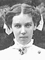 | Julia Priscilla Roundy 25 May 1893 - 24 May 1977 Married Guy Leslie Rees 26 Mar. 1913 The 5th child of Samuel "H" Roundy and Eugenia Elmira Taylor |
| 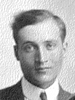 | Hyrum Waldo Roundy 16 Dec. 1895 - 1 Jan. 1940 Married Mary Ann Price 17 Oct. 1917 The 6th child of Samuel "H" Roundy and Eugenia Elmira Taylor |
| 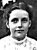 | Josephine Roundy 24 Dec. 1897 - 15 Sep. 1917 Married Jesse Payton Warner 17 Mar. 1915 The 7th child of Samuel "H" Roundy and Eugenia Elmira Taylor |
| 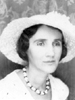 | Esther Irene Roundy 27 Nov. 1899 - 25 Nov. 1952 Married Robert Hartshorn 17 Dec. 1919 The 8th child of Samuel "H" Roundy and Eugenia Elmira Taylor |
| 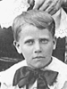 | Clarence Roundy 6 June 1901 - Married Norah Agnes Cheney 5 Nov. 1924 9th child of Samuel "H" Roundy and Eugenia Elmira Taylor |
| 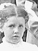 | Viola Eugenia Roundy 21 Apr. 1903 - 22 Mar. 1959 Married Niels Rudger Bensen 11 June 1925 The 10th child of Samuel "H" Roundy and Eugenia Elmira Taylor |
| 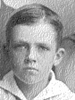 | Leonard Roundy 2 Sep. 1907 - Married Selma Eder 5 July 1927 11th child of Samuel "H" Roundy and Eugenia Elmira Taylor |
Back to Buchanan Family History web pages.